タブレット 768 × 1024・動きを減らす
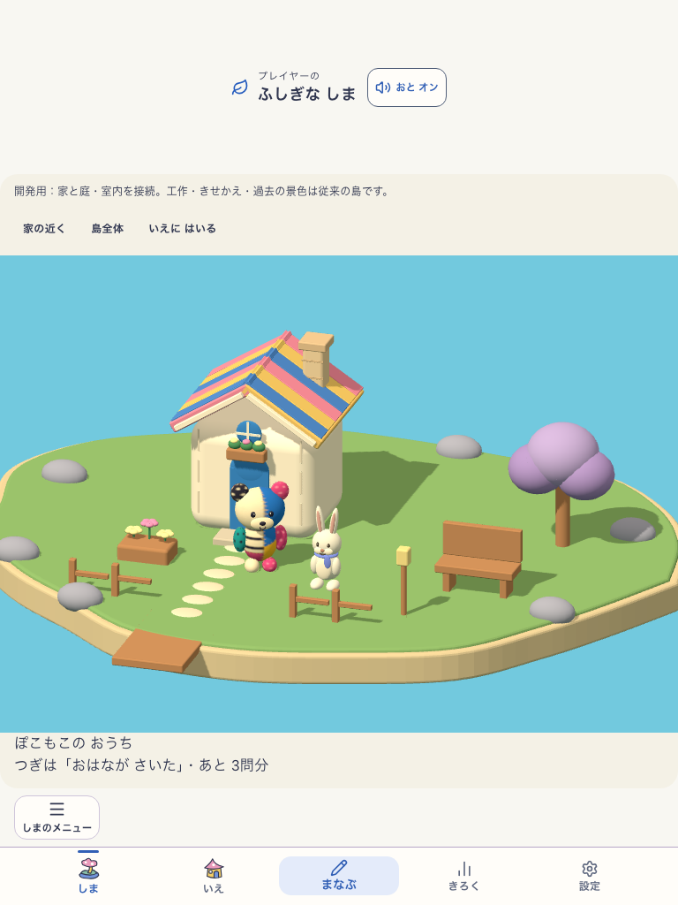
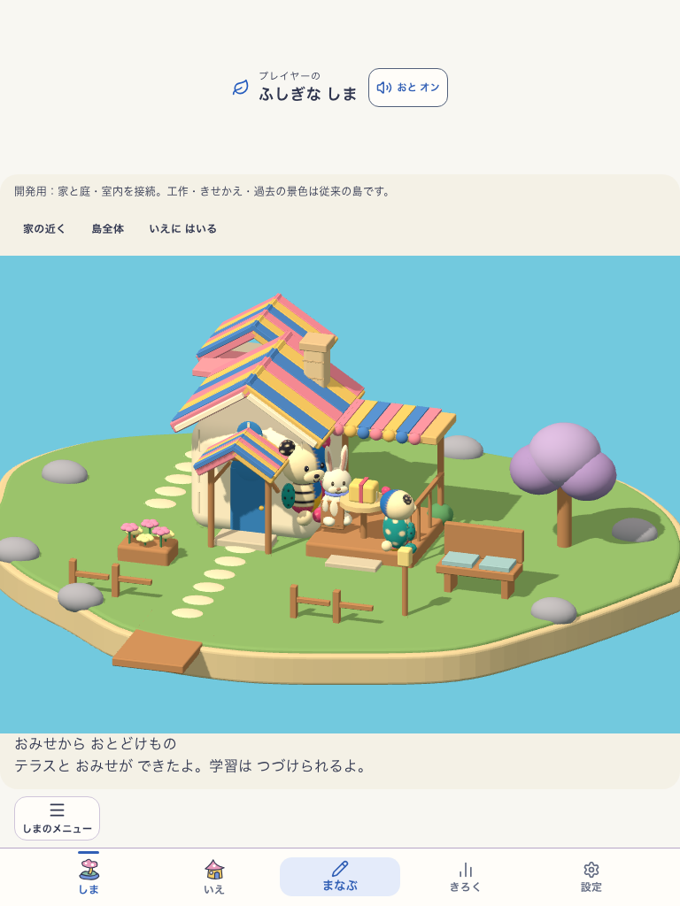

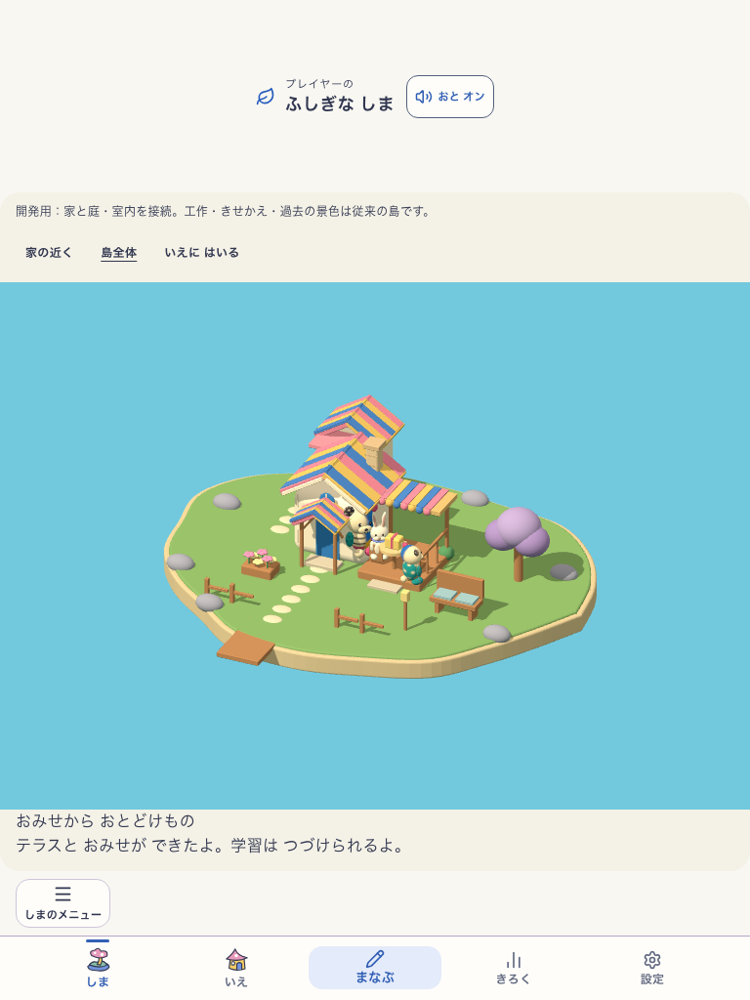
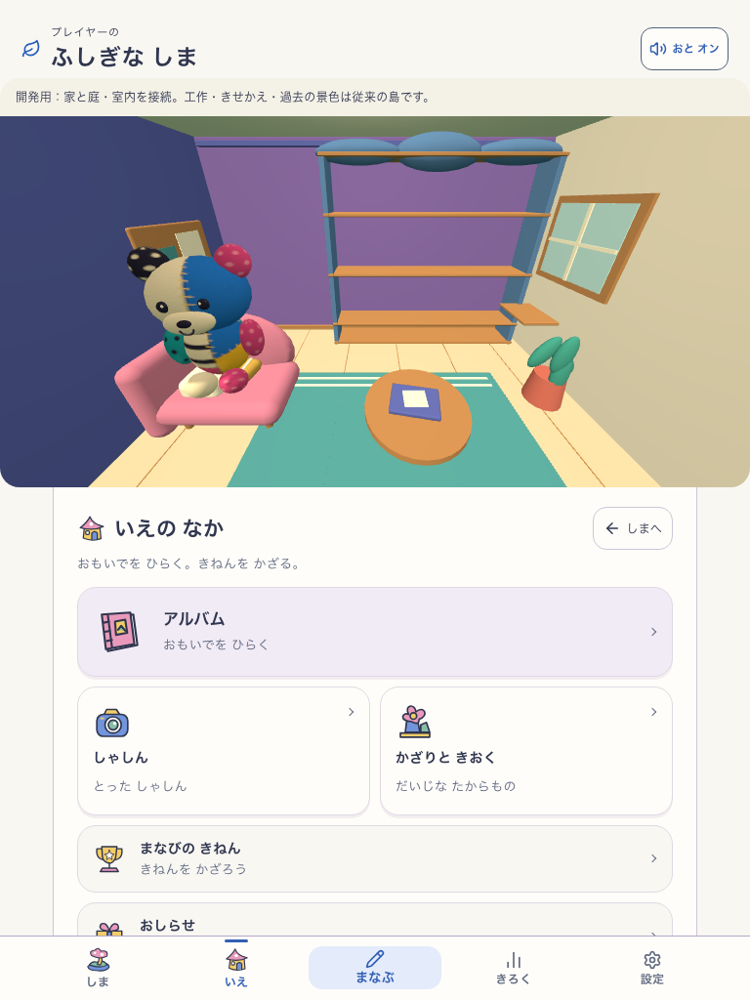
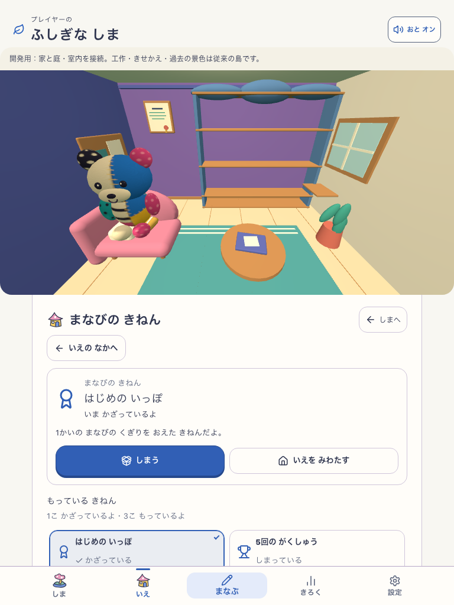
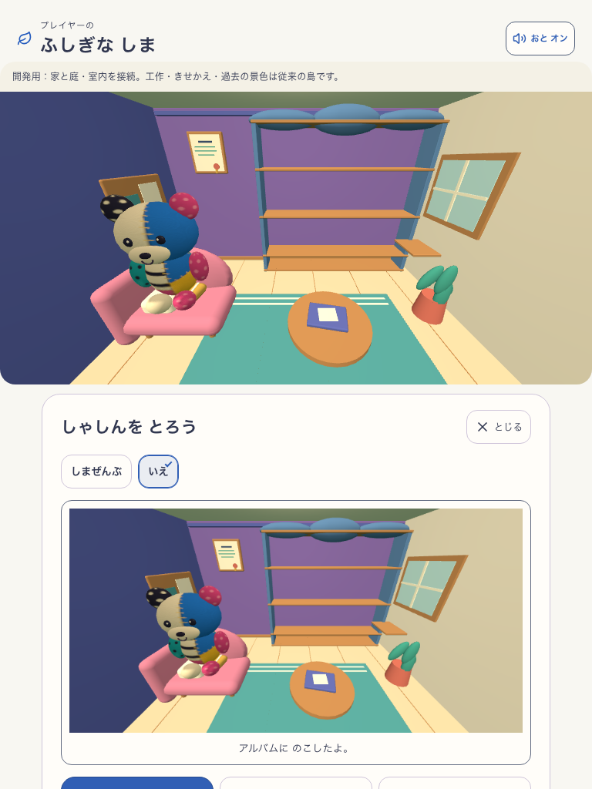
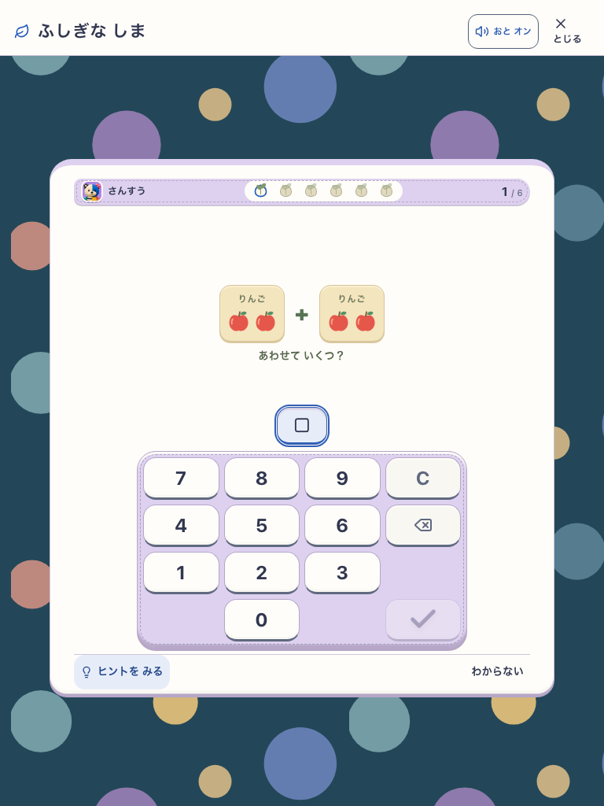
学習で育った家へ入り、ぽこもこと本人の記念を見る。実際の部屋を写真に残し、同じ学習の続きへ戻る。
DEV経路の検証：phone / tabletとも通過。
最終アート：HOLD。子どもの無説明理解・意欲：未検証。本番移行・全メニューの新景観への統合：未完。
home-journey-connected-house-v7 / 固定DEV 127.0.0.1:5218 / runtime revision development-local。正確な入力版はsource.jsonの957ファイルとfingerprintで識別。ブラウザ結果。
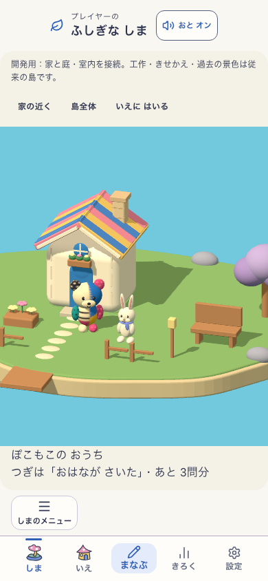
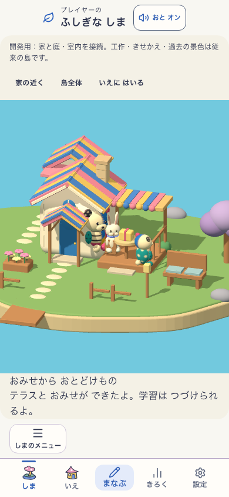
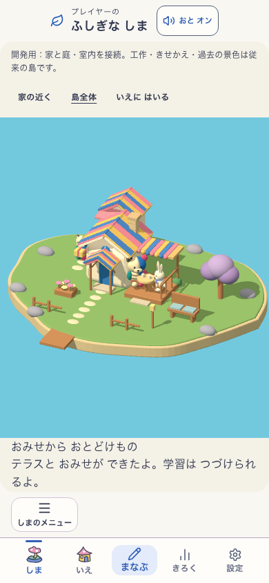
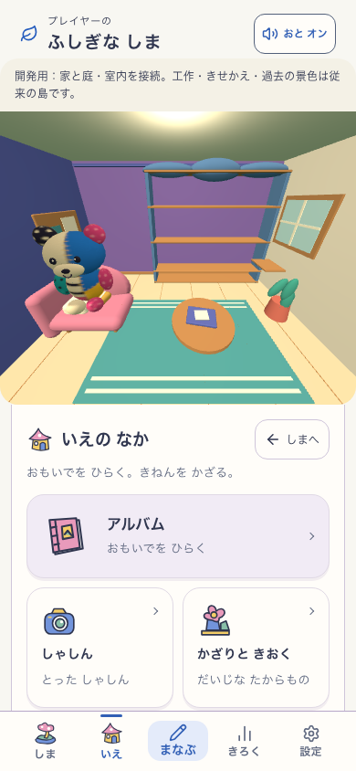
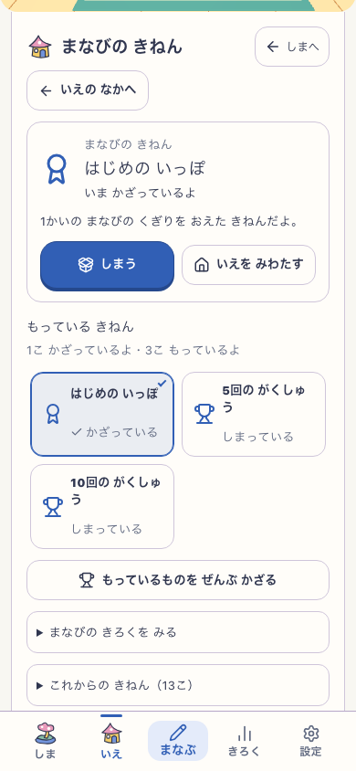
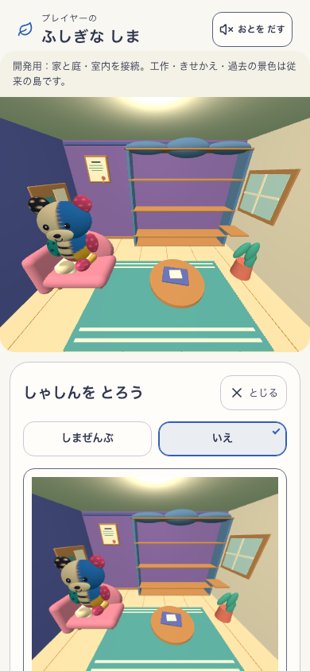
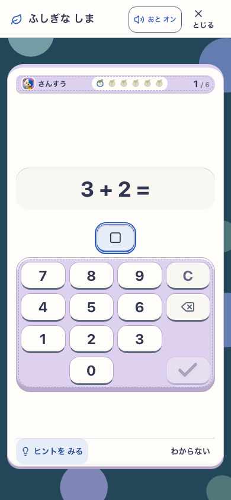







家の青い扉、生成りの壁、色分けした屋根、布の主役を継承。海・植栽・素材の豊かさと立体感は基準未達。室内は既存の機能をつないだ段階で、最終アートの合格ではない。